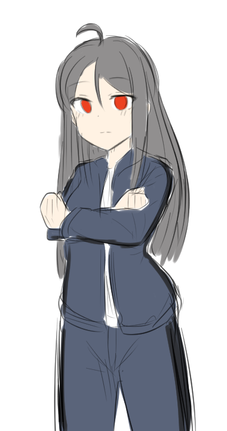
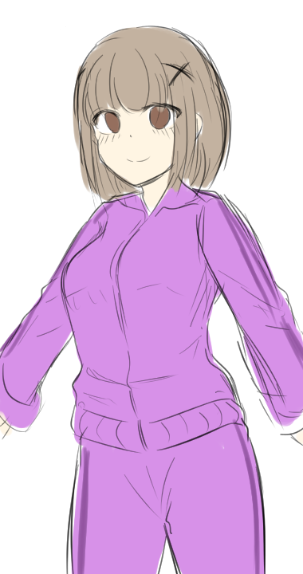

1. 학교 2. 기숙사 or 남성의 자취방 3. 버스 여행 길 안 4.북적한 해변 or 사람 많은 여행지 스폿 5. 놀이터 6. 비행기 7. 번화가 사거리 같은곳
8. 동아리실 or 수업실 안 (좀더 추가 될 수도 있는 씬 9. 카페 and 음식점 10. 여성의 자취방 11. 꽃길 )
필요한 캐릭터 그림
일단 크게 3가지 : 체육복 차림 셔츠차림 비키니 차림 크게 3가지 단계로 가고 아마 어렷을때의 회상도 추가 된다면
키 작게 해서 어렸을때의 모습을 추가될 가능성 존재 표정들은 금방 바꿀수 있다고 했으니 이건 추후 이야기 통해서 결정
prologue
1. 후배와 선배의 만남
복학생의 OT는 꿈도 못꾸는 가운데 누군가로부터 동아리에 오라는 전화가 온다. 동아리에 가서 군대에서도 몇번 면회를 오기도 하고 고등학교때도 같은 사진 동아리 활동을 한 3학년 선배를 만남 -> 선배한테 퀴즈를 풀음(이건 자세히 상의한다) ->선배가 다음날에 동아리 가입하고 싶은
사람들에 대한 강의가 있을건데 동아리 초기 멤버인데 비쳐달라고 말함-> 얼굴 비치며 소개하고 강의 할려고 하니 어디선가
익숙한 여성의 얼굴이 보임 -> 끝나고 나서 그 여성이 오는데 정체는 오랫동안 봐왔지만 고등학교때 이사를 가서 못본 소꿉친구 1살 어린 후배였다. 선배는 멀리서 그 모습을 보게 되는데......
2. 학교 축제
주인공은 둔해서 눈치를 못챈 가운데 아침 수업에는 후배랑 듣고 오후 수업에는 선배와 같이 듣는 아이러니한 상황이 벌어진다
이 와중 중간고사 끝난 후 학교 축제가 다다음주로 공지가 되어 있었다. 선배는 학생회 소속이여서 준비하느라 바빴고
후배는 학교 축제에서 같은 동기들하고 준비할 것에 대하여 이것저것 알아보느라 얼굴을 볼 일이 적어졌다. 이 와중, 각각
주인공한테 도움을 요청하게 된다. 그러나 한쪽을 도와주면 다른 한쪽은 도움을 못주는 상황에 놓이게 된다. 이때 주인공의 선택은?
[선택지 나오고 그 후의 선택과 2명의 엇갈리는 말과 행동들 추가]
3. 여름 방학
여름방학이 되고 동아리에서 여름방학에 여행 갈 사람들을 모집 한다고 하였다. 후배와 선배는 이런 저런 이유로
빠질려고 하지만 <주인공>이 간다는 말에 나중에 따로 여행 계획한 리더한테 연락해서 간다고 한다.
[[ 리더(남성) : 세상에 그 과대퀸하고 그 과대아이돌이 간다고??? 이건 빅 뉴스다!! ]]
생각 외로 사람의 수가 2배가 모여 큰 여행이 되 버리고 정작 주인공은 동기들과 같이 프로젝트 생각하다가
머리가 안돌아가 쉰다는 마인드로 간 거였다. 그러나 선배와 후배는 오래전에 <주인공>과 있었던 생각을 떠올리며
무언가를 노리게 된다.
4. 갈등과 오해
후배는 옛날에 주인공한테 구해진 적이 있엇고 선배는 주인공의 어시스트로 엄격한 부모님로부터 자신의 결심을
당당히 말해줄수 있게 해준적이 있다. 그래서 그들은 주인공이 아니였으면 지금까지 여기에 올라올지 몰랐을 거라는게
그들의 생각이였다. 그러나 그들은 모종의 일(자세히 추가한다)을 겪게 되고 주인공은 선택의 시간에 다가오게 된다.
그러나 주인공은 답변을 미루게 되고 그렇게 3명의 관계는 점점 애매해지게 된다.
여름방학이 그렇게 끝나게 되고 2학기가 시작된다. 그러다가 2명의 그녀에게 최종의 사건들이 일어나게 된다.
선배는 학교의 추천장으로 인해 교환학생으로 유학을 가게 되었고 후배는 연애 기획사의 러브콜로 인해 아이돌 데뷔가
거의 결정된 상태이다. 2명은 솔직히 평범하게 수업을 받고 주인공과 러브한 생활을 보내고 싶어한다. 그렇게 2명이
떠나야 하는 시간이 겹치게 되고 주인공은 붙잡아야할 1명을 선택 해야만 하는데.
5. 엔딩 or 새로운 시작
이건 진짜 모르겟다 여러분들의 아이디어를 모집합니다.
선배를 선택할 시 :
후배를 선택할 시 :
prologue. 한날의 꿈...
띠디디디.. 띠디디디...
커튼 사이로 줄기줄기 비춰오는 햇빛이 따스하게 마루바닥을 쬐고 있었다. 창문을 열어논 탓인지 커튼이 흔들거리며
어서 일어나기를 재촉하였다.
나는 손을 뻗어 옆에 요란하게 움직이는 자명종을 껐다. 이른 봄의 바람은 아직 겨울을 품고 있는 듯 찬 공기가 내 뺨을
스쳤다. 나는 파묻힌 배게에서 얼굴을 들어 시간을 보았다.
나 : 으으....어서 아침 수업 들으러 일어나지 않으면 나 지각일텐데...5분만....더 자자... 어차피 8시이고 아침 수업은
9시 이니까....
모든 학생들의 침대의 법칙 '5분' 침대법을 시전하며 나는 스르륵 이불에 빨려 들어갔다.
............................
.............................
시간이 얼마나 되었을까.. 다시 핸드폰의 비상 알람소리에 나는 눈이 떠졌다.
나 : 어 벌써 시간이 이렇게 됬나......아!!! 지금 몇시지?!!!?
나는 바로 침대에서 일어나 시간을 보았다. 8시 50분 벌써 수업이 시작하기 10분전. 첫날부터 지각하면 안되는데...
어서 빠르게 옷을 갈아입고 대충 씻은 채로 급하게 가방을 들고 나왔다.
그래 이게 바로 나. 군대를 전역하고 바로 2학년으로 복학하는 23살 자취생, 컴퓨터공학과인 나. 내 이름은 바로 [000]이다.
(여기에 주인공 이름 입력란)
(일단 prologue 는 대강 이렇게 썻다. 좀더 살을 붙일것)
1.1 새로운 만남 and 익숙한 만남
주인공 : 휴 드디어 끝났다.....
지각할뻔한 첫날이지만 다행이도 OT만 하는 수업들이여서 비교적 일찍 마쳤다. 다른 오후 수업을 듣기에는 시간이 남아
주변을 둘러보기 시작하였다.
주인공 : 학교가 많이 변했구나.....
저기 텅빈 부지에는 친구들한테 건물 큰거 하나 있으면 수업 듣기 편하고 밥 먹기에도 괜찮을 거라고 우스갯 소리로 이야기 했는데
거짓말 같이 큰 건물이 들어서 수업 센터로 바뀌어 있었다. 그리고 운동장도 최근에 보수 했는지 기구들이 새거로 교체되어 있었다.
교내가 큰데 비해 벤치도 없었는데 밴치가 있는 것을 보면 학생회에서 예산을 잘 활용하고 있다는 것을 실감 느껴 안도감을 느꼈다.
첫날부터 이런 생활이라니 나도 군기 다 빠진 하나의 복학생일 뿐이구나. 그런 생각을 하니 한숨이 절로 나왔다.
그러고 보니 오전 수업 2번 들을동안 계속해서 옆에서 누군가가 날 쳐다보는 느낌이였는데... 설마 착각이겠지.
전화벨 소리 : 띠리리링 띠리리링..
음? 누가 내 전화번호를 아는 거지? 핸드폰 화면을 보니 생소한 전화번호가 내 눈에 띄었다. 이걸 받아야 하나?
선택지 1 : 그래 전화 걸어준게 어디야. 누군지는 모르지만 일단 받아 보자.
선택지 1 고를시
주인공 : 여보세요. 누구신가요?
나름대로 최대한 정중하게 처음으로 전화해준 누군가에게 물어보았다. 내 전화번호라도 아니 이게 어디야.'
??? : 와 설마 전화가 갈것이라고 생각을 안했는데 아직도 핸드폰 번호는 그대로구나 [주인공] !
갑작스러운 활기찬 목소리에 내 머리속의 생각회로는 빠르게 작동하기 시작하였다. 그리고 내린 결론은....
주인공 : :.....?? 전 여자친구가 없는데요?
순간적인 고뇌로 내놓은 대답에 잠깐 목소리가 끊기더니 장난스러운 흐느낌의 목소리가 들려왔다.
??? : 아~흑흑~~ 이 누님을 까먹다니 정말 슬픈데~ 설마 잠깐 못본 사이에 나를 기억 못하는 거니?!
주인공 : ......저는 여자가 주변에 없는 아싸여서요.
순간 실수했다는 것을 깨닫는 동시에 그런 말을 스스로 자백했다는 것에 창피함이 쏠려왔다. 누군지도 모르는데
그 말을 하다니.. 나 사실 바보엿던거 아닌가?
수화기 넘어에서 넘어가듯이 간지러운 웃음에 내 얼굴은 화끈거려 불게 물든걸 어렴풋이 느끼기 시작하였다.
??? : (꺄하하하하하하 꺄르르) ~ 후~~하~~~ 오랜만에 정말 웃었다! [주인공]! 어서 언어 마술사 동아리 방으로 오면 알게 될꺼야!
기다리고 있을께!
언어 마술사 동아리 , 내가 이 이한대학교를 오고 뜻 있는 컴퓨터 관련학과 인원들이 모인 동아리이다. 보통 동아리가 그렇듯이
나중에 술이나 한잔 하면서 지내는 동아리로 존재 할려고 하는게 원래 목표였다. 그런데 들려오는 소문으로는 게임이나 여러 대회 프로젝트에 참가해서
수많은 상을 휩쓸어가는 괴물 동아리로 되가는 중이라고 한다. 게다가 코딩 모르는 사람이든 가르쳐 준다고 하여 모든 학생들이 가볍게 듣는 모양이다.
이렇게 큰 동아리가 될줄은 상상도 못한 일이었다.
나는 왜 큰 동아리가 되었는지 의문을 품으며 동아리 실로 향하기 시작하였다.
선택지 2 : 설마 광고전화나 설문조사겠지. 그냥 무시하자.
선택지 2를 선택할 시